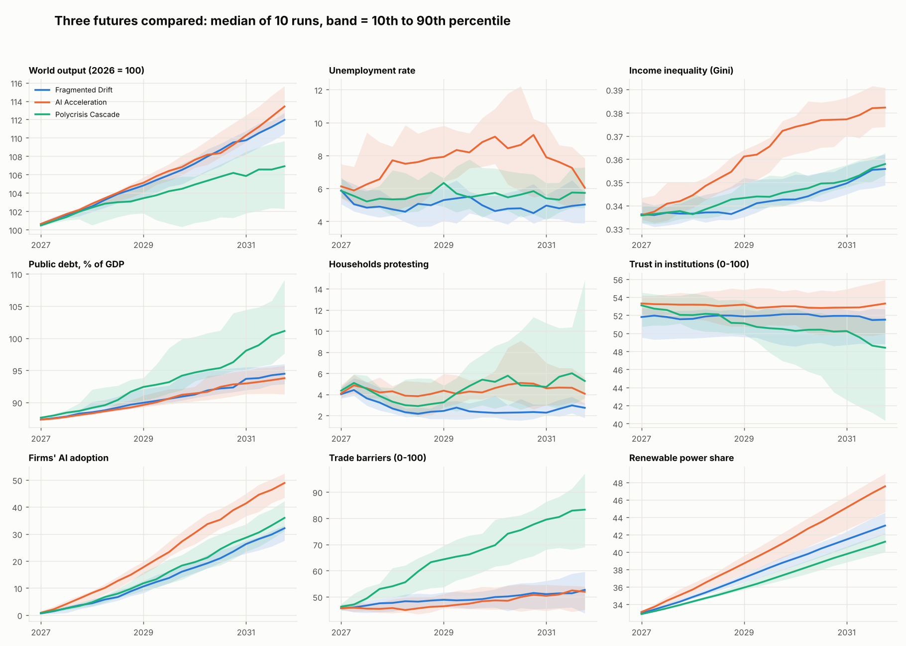
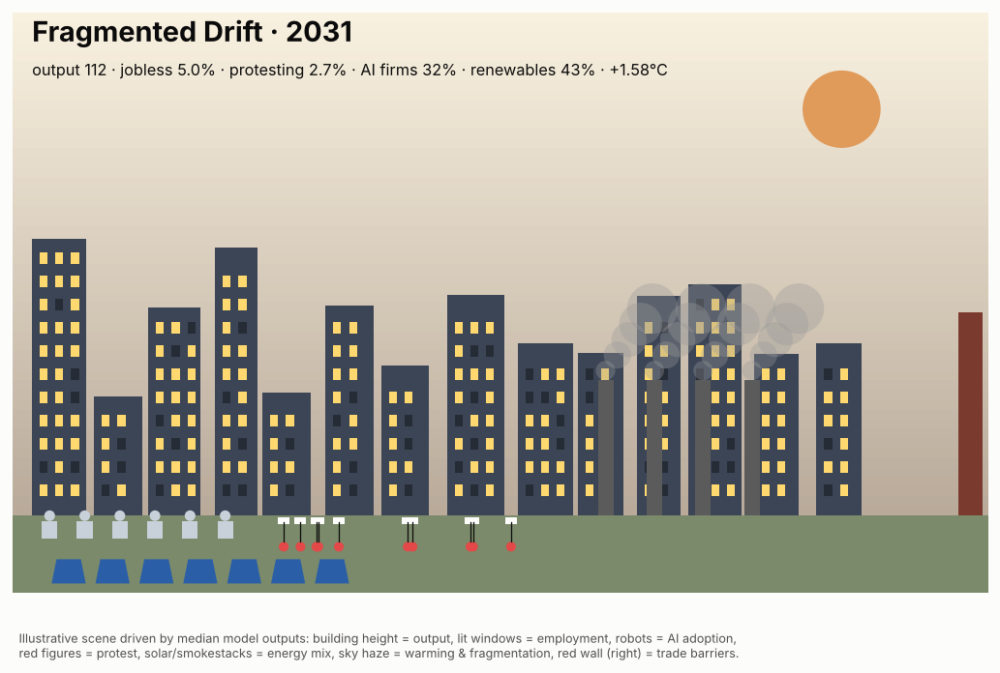
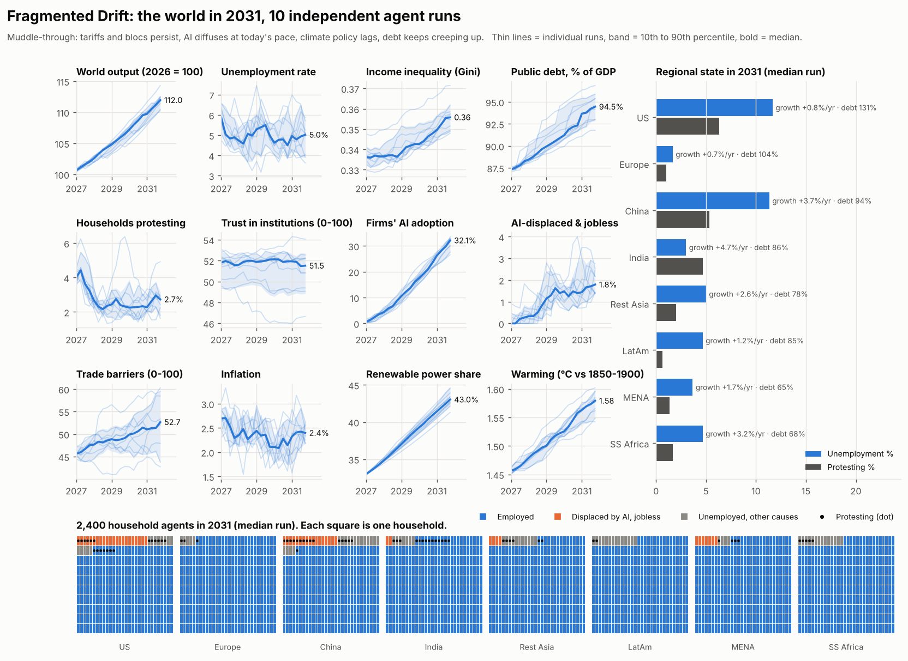
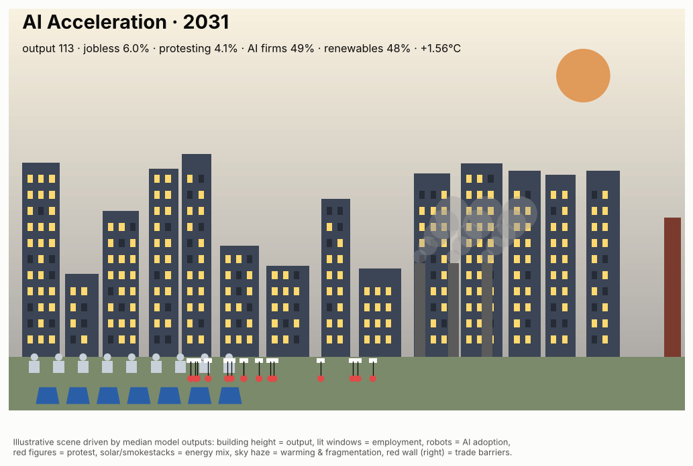
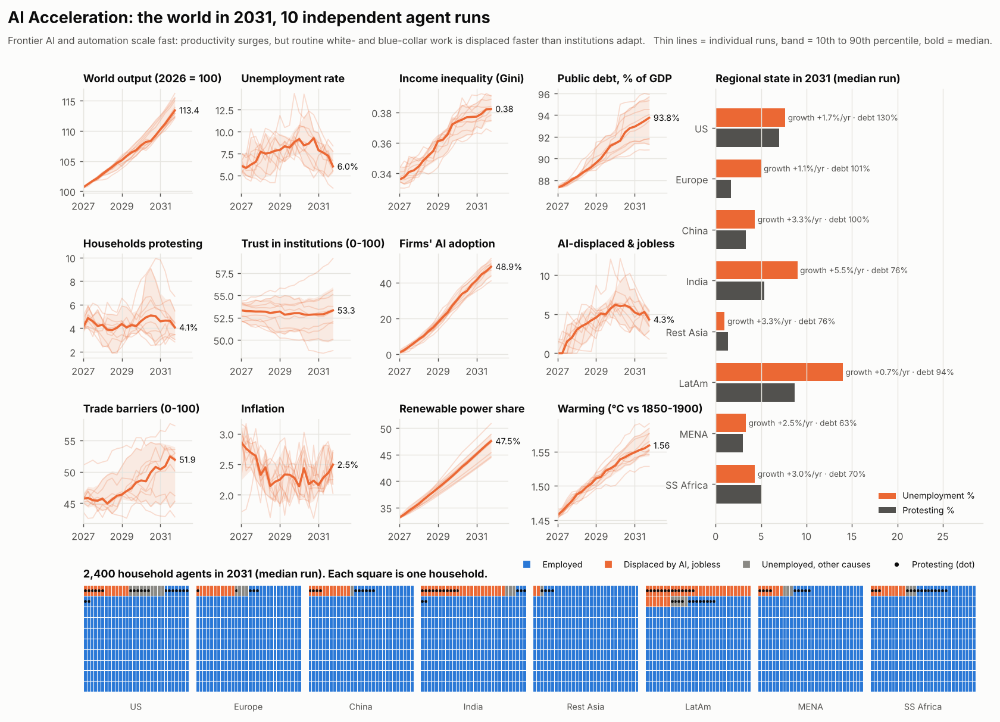
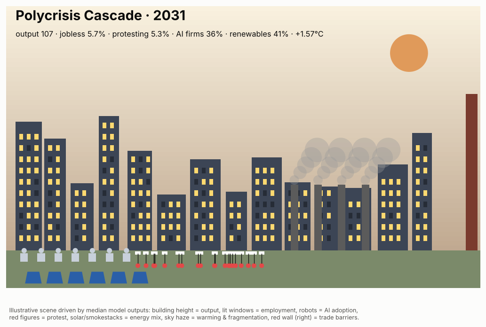
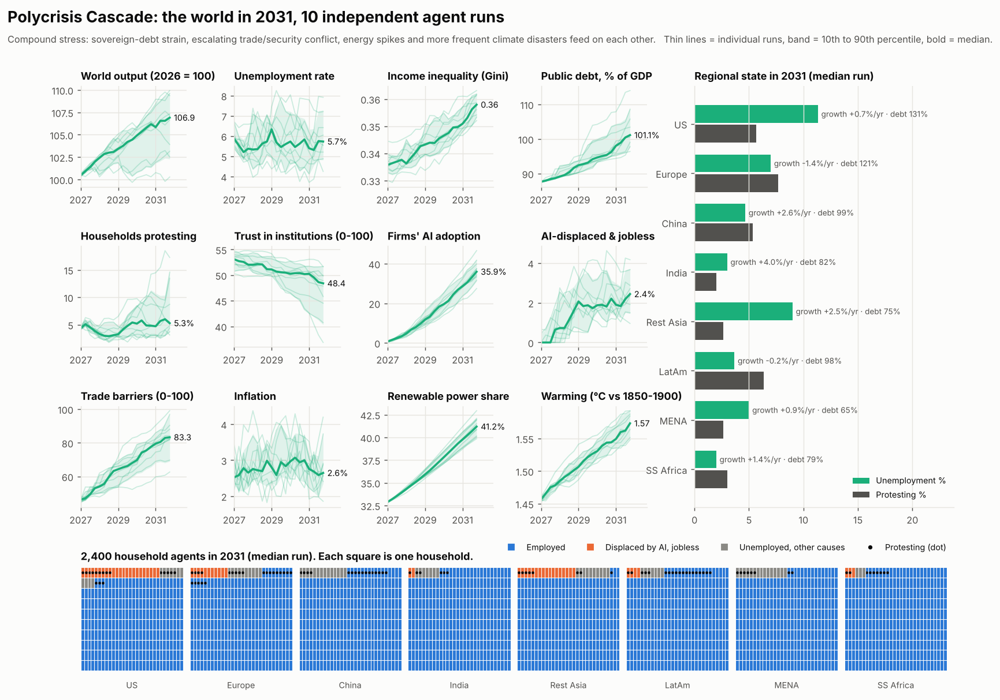
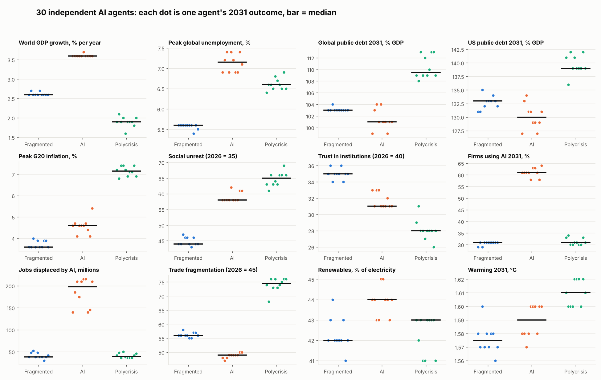

<title>World 2031 Futures</title>
<meta name="claude:viewport-fit-sides" content="cover">
<link rel="preconnect" href="https://fonts.googleapis.com"><link rel="preconnect" href="https://fonts.gstatic.com" crossorigin>
<link rel="stylesheet" href="https://fonts.googleapis.com/css2?family=Archivo:wght@500;700;800&family=IBM+Plex+Mono:wght@400;600&family=IBM+Plex+Sans:ital,wght@0,400;0,500;0,600;1,400&display=swap">
<style>
/* Layout: one reading column, wide figures; scenario colour carried by a token per section */
:root{
  --bg:#f3f4f1; --surface:#ffffff; --ink:#14171c; --ink2:#4a4f57; --muted:#7a7f86; --rule:#d9dbd6;
  --s1:#2a78d6; --s2:#eb6834; --s3:#169c6c; --up:#1f7a4a; --down:#b23b3a;
  --display:"Archivo",system-ui,sans-serif; --body:"IBM Plex Sans",system-ui,sans-serif; --mono:"IBM Plex Mono",ui-monospace,monospace;
}
@media (prefers-color-scheme:dark){:root:not([data-theme="light"]){
  --bg:#121417; --surface:#1b1e22; --ink:#eceef0; --ink2:#b7bcc3; --muted:#8a9099; --rule:#2e3238;
  --s1:#3987e5; --s2:#f07a48; --s3:#1fb684; --up:#4fbf86; --down:#ef7473; color-scheme:dark}}
:root[data-theme="dark"]{
  --bg:#121417; --surface:#1b1e22; --ink:#eceef0; --ink2:#b7bcc3; --muted:#8a9099; --rule:#2e3238;
  --s1:#3987e5; --s2:#f07a48; --s3:#1fb684; --up:#4fbf86; --down:#ef7473; color-scheme:dark}
body{background:var(--bg);color:var(--ink);font:16px/1.6 var(--body)}
.wrap{max-width:1120px;margin:0 auto;padding-block:40px 64px;padding-left:max(16px,env(safe-area-inset-left,0px));padding-right:max(16px,env(safe-area-inset-right,0px));display:grid;gap:56px}
h1,h2,h3{font-family:var(--display);text-wrap:balance;margin:0}
h1{font-size:clamp(2.6rem,7vw,4.6rem);line-height:.95;font-weight:800;letter-spacing:-.02em}
h1 span{display:block;font-weight:500;color:var(--ink2);font-size:.42em;letter-spacing:0;margin-top:14px;line-height:1.25}
h2{font-size:clamp(1.8rem,4vw,2.5rem);font-weight:800;letter-spacing:-.01em}
h3{font-size:1rem;font-weight:700;margin-bottom:10px}
h3 small{font-weight:400;color:var(--muted)}
p{margin:0}
.lede{max-width:68ch;color:var(--ink2);font-size:1.08rem}
.stats{display:flex;flex-wrap:wrap;gap:10px 28px;font-family:var(--mono);font-size:.85rem;color:var(--ink2)}
.stats b{color:var(--ink);font-weight:600}
.hero{display:grid;gap:20px}
.eyebrow{font-family:var(--mono);font-size:.78rem;letter-spacing:.08em;text-transform:uppercase;color:var(--accent,var(--muted))}
nav{display:flex;flex-wrap:wrap;gap:8px}
nav a{font:600 .9rem var(--body);color:var(--ink);text-decoration:none;border:1px solid var(--rule);border-radius:999px;padding:6px 14px;display:flex;align-items:center;gap:8px;background:var(--surface)}
nav a:hover,nav a:focus-visible{border-color:var(--ink2);outline:none}
.dot{width:10px;height:10px;border-radius:50%;background:var(--accent);display:inline-block;flex:none}
.s1{--accent:var(--s1)} .s2{--accent:var(--s2)} .s3{--accent:var(--s3)}
.tablewrap{overflow-x:auto;border:1px solid var(--rule);border-radius:10px;background:var(--surface)}
table{border-collapse:collapse;width:100%;min-width:640px;font-variant-numeric:tabular-nums}
th,td{padding:12px 16px;text-align:left;border-bottom:1px solid var(--rule);vertical-align:baseline}
tbody tr:last-child th,tbody tr:last-child td{border-bottom:0}
thead th{font:600 .85rem var(--body);color:var(--ink2)}
thead th.s1,thead th.s2,thead th.s3{color:var(--ink)} thead th .dot{margin-right:8px}
tbody th{font-weight:500;color:var(--ink2);font-size:.92rem}
.v{font-family:var(--mono);font-size:.95rem;display:inline-block;min-width:3.6em}
.v.ag{color:var(--ink2);font-weight:600}
td .v.ag::before,.legend .v.ag::before{content:"/";color:var(--muted);margin-right:.5em;font-weight:400}
.legend{display:block;font-weight:400;color:var(--muted);margin-top:2px}
.legend .v{font-size:.78rem;min-width:0;margin-right:.5em}
.note{font-size:.85rem;color:var(--muted);max-width:80ch}
figure{margin:0}
img{max-width:100%;height:auto;display:block;border-radius:8px}
.wide img{border:1px solid var(--rule)}
figcaption{font-size:.85rem;color:var(--muted);margin-top:8px;max-width:80ch}
.scn{display:grid;gap:28px;border-top:3px solid var(--accent);padding-top:28px}
.scn-head{display:grid;gap:8px}
.premise{color:var(--ink2);max-width:70ch}
.scn-grid{display:grid;grid-template-columns:minmax(0,1.15fr) minmax(0,1fr);gap:32px;align-items:start}
.scene img{border:1px solid var(--rule)}
.bul{margin:0;padding-left:1.1em;display:grid;gap:8px}
.bul li::marker{color:var(--accent)}
.three{display:grid;grid-template-columns:repeat(3,minmax(0,1fr));gap:32px}
.heads{margin:0;padding-left:1.6em;display:grid;gap:6px;font-size:.92rem;color:var(--ink2)}
.heads li::marker{font-family:var(--mono);font-size:.8rem;color:var(--muted)}
.wl{margin:0 0 16px;padding-left:1.1em;display:grid;gap:4px;font-size:.92rem;color:var(--ink2)}
.tag{font:600 .72rem var(--mono);letter-spacing:.08em;text-transform:uppercase;margin-bottom:4px}
.tag.up{color:var(--up)} .tag.up::before{content:"▲ "} .tag.down{color:var(--down)} .tag.down::before{content:"▼ "}
blockquote{margin:0 0 14px;padding:12px 14px;background:var(--surface);border:1px solid var(--rule);border-radius:8px;font-size:.92rem;color:var(--ink2);font-style:italic}
cite{display:block;font:normal .75rem var(--mono);color:var(--muted);margin-top:6px}
details{border:1px solid var(--rule);border-radius:8px;background:var(--surface)}
summary{cursor:pointer;padding:12px 16px;font-weight:600}
summary:focus-visible{outline:2px solid var(--accent);outline-offset:2px}
details img{border-radius:0 0 8px 8px}
.findings{display:grid;grid-template-columns:repeat(2,minmax(0,1fr));gap:20px 40px}
.finding h3{margin-bottom:4px}
.finding p{color:var(--ink2);font-size:.95rem}
.caveat{background:var(--surface);border:1px solid var(--rule);border-radius:10px;padding:20px;display:grid;gap:10px}
.caveat p{color:var(--ink2);max-width:80ch}
.method{display:grid;grid-template-columns:repeat(2,minmax(0,1fr));gap:32px}
.method p,.method li{color:var(--ink2);font-size:.95rem}
.method ul{margin:8px 0 0;padding-left:1.1em;display:grid;gap:4px}
footer{font-size:.85rem;color:var(--muted)}
@media (max-width:860px){.scn-grid,.three,.findings,.method{grid-template-columns:minmax(0,1fr)}}
</style>
<main class="wrap">
<header class="hero">
  <p class="eyebrow">Scenario simulations · October 2026 → December 2031</p>
  <h1>World 2031<span>Three futures under today's economic and social constraints</span></h1>
  <p class="lede">Each scenario was run 10 times by two independent methods. The first is an agent-based model in which every run builds a new population of governments, firms and households and hits it with random shocks. The second is 10 separate AI agents per scenario, each reasoning year by year through one plausible path without seeing the others.</p>
  <div class="stats"><span><b>60</b> runs</span><span><b>30</b> model worlds × 2,600 agents</span><span><b>30</b> independent AI analysts</span><span><b>20</b> quarters each</span></div>
  <nav aria-label="Scenarios"><a href="#fragmented-drift" class="s1"><span class="dot"></span>Fragmented Drift</a><a href="#ai-acceleration" class="s2"><span class="dot"></span>AI Acceleration</a><a href="#polycrisis" class="s3"><span class="dot"></span>Polycrisis Cascade</a></nav>
</header>

<section aria-labelledby="cmp" style="display:grid;gap:16px">
  <h2 id="cmp">The three worlds side by side</h2>
  <div class="tablewrap"><table>
<thead><tr><th scope="col">2031 outcome <span class="legend"><span class="v">model</span><span class="v ag">AI agents</span></span></th><th scope="col" class="s1"><span class="dot"></span>Fragmented Drift</th><th scope="col" class="s2"><span class="dot"></span>AI Acceleration</th><th scope="col" class="s3"><span class="dot"></span>Polycrisis Cascade</th></tr></thead>
<tbody><tr><th scope="row">World GDP growth, % a year</th><td><span class="v">2.3</span><span class="v ag">2.6</span></td><td><span class="v">2.6</span><span class="v ag">3.6</span></td><td><span class="v">1.3</span><span class="v ag">1.9</span></td></tr><tr><th scope="row">Public debt change, pts of GDP</th><td><span class="v">+7</span><span class="v ag">+8</span></td><td><span class="v">+6</span><span class="v ag">+6</span></td><td><span class="v">+14</span><span class="v ag">+14</span></td></tr><tr><th scope="row">Peak unemployment, %</th><td><span class="v">6.5</span><span class="v ag">5.6</span></td><td><span class="v">9.6</span><span class="v ag">7.2</span></td><td><span class="v">7.1</span><span class="v ag">6.6</span></td></tr><tr><th scope="row">Firms using AI by 2031, %</th><td><span class="v">32</span><span class="v ag">31</span></td><td><span class="v">49</span><span class="v ag">61</span></td><td><span class="v">36</span><span class="v ag">31</span></td></tr><tr><th scope="row">Trade fragmentation (2026 = 45)</th><td><span class="v">53</span><span class="v ag">56</span></td><td><span class="v">52</span><span class="v ag">49</span></td><td><span class="v">83</span><span class="v ag">74</span></td></tr><tr><th scope="row">Renewables, % of power</th><td><span class="v">43</span><span class="v ag">42</span></td><td><span class="v">48</span><span class="v ag">44</span></td><td><span class="v">41</span><span class="v ag">43</span></td></tr><tr><th scope="row">Warming by 2031, °C</th><td><span class="v">1.58</span><span class="v ag">1.58</span></td><td><span class="v">1.56</span><span class="v ag">1.59</span></td><td><span class="v">1.57</span><span class="v ag">1.61</span></td></tr></tbody></table></div>
  <p class="note">Medians of 10 runs per method. Debt is shown as change from 2026, because the model tracks 8 regions starting at 87% of GDP while the agents used the global figure of about 95%.</p>
</section>

<figure class="wide">
<figcaption>Agent-based model: median and 10th–90th percentile band across 10 runs per scenario, quarterly, 2027–2031.</figcaption></figure>


<section class="scn s1" id="fragmented-drift">
  <header class="scn-head">
    <p class="eyebrow">Scenario 1</p>
    <h2>Fragmented Drift</h2>
    <p class="premise">Muddle-through. Tariffs and blocs persist and edge higher, AI spreads at today&#x27;s pace, climate policy lags, debt creeps up.</p>
  </header>
  <div class="scn-grid">
    <figure class="scene"></figure>
    <div class="report">
      <h3>What 2031 looks like</h3>
      <ul class="bul"><li>Growth holds but stays slow: 2.3% a year in the model, 2.6% from the agents. Nobody has the fiscal room to lift it.</li><li>Public debt rises 7–8 points of GDP in both methods. The US ends near 130–133%.</li><li>Frontier economies in Africa and South Asia default (median 4 crises per agent run). Japanese and US bond-auction scares recur but are contained.</li><li>Trade settles into two loose blocs, with India, the Gulf and Mexico acting as connector economies. Fragmentation goes from 45 to about 53–56.</li><li>AI reaches about 31% of firms. Gains concentrate in large firms while entry-level office jobs thin out (about 38 million displaced).</li><li>Inequality rises in all 20 runs. Trust slips from 40 to 35 and unrest climbs from 35 to 44.</li><li>Renewables pass 42% of power, yet warming still reaches about 1.58 °C.</li></ul>
    </div>
  </div>
  <div class="three">
    <div><h3>Ten agents' headlines</h3><ol class="heads"><li>Slow-growth stalemate: tariffs creep, debts swell, frontier defaults cluster, nobody fixes anything</li><li>Slow growth, sticky rates, creeping debt: a world patched together, never fixed</li><li>Slow-grinding world: frontier defaults, a bond scare in Tokyo, and AI gains for the few</li><li>AI capex hangover and frontier defaults leave a slower, poorer, more walled-off world</li><li>Shallow 2029 slump, debt ratchets higher, blocs harden: a grinding, joyless half-decade</li><li>Slow-bleed decade: debt creeps, blocs harden, a 2029 bond wobble reshapes fiscal politics</li><li>Stagnant blocs, rising debt: a mild 2028 slump and frontier defaults</li><li>Slow grind: AI capex wobble, frontier defaults, bond-market nerves, and walls creeping higher</li><li>Slow bleed: bond-market jitters, frontier defaults and tariff creep sap a tired world</li><li>Slow-grind decade: frontier defaults, a shallow 2029 stall, and walls growing higher</li></ol></div>
    <div><h3>Who gains, who loses <small>(median agent run)</small></h3>
      <p class="tag up">Gain</p><ul class="wl"><li>India and connector economies (Vietnam, Mexico, Gulf states, Morocco)</li><li>Owners of AI and grid infrastructure, utilities and transmission builders</li><li>Defence contractors and holders of short-duration high-yield cash</li></ul>
      <p class="tag down">Lose</p><ul class="wl"><li>Indebted frontier economies in Africa and South Asia</li><li>Young graduates in entry-level white-collar work and renters in big cities</li><li>Small export-dependent manufacturers caught between blocs, and the euro-area periphery/France</li></ul>
      <h3>Wildcards the agents drew</h3><ul class="wl"><li>A Sahel interstate war in 2029 that drew in Gulf and Russian-linked mercenary forces and triggered a major migration wave toward North Africa and Europe</li><li>A weak US Treasury auction in 2028 briefly pushed 10-year yields to 5.4%, forcing a coordinated Fed-Treasury buyback reassurance.</li><li>A failed 30-year Japanese government bond auction in 2028 forced the Bank of Japan to reinstate yield control amid a yen panic.</li><li>A coordinated cyberattack briefly disabled a major cross-border payments messaging hub for 36 hours in 2030, accelerating the shift to bloc-specific payment rails.</li><li>A limited Venezuela-Guyana war over the oil-rich Essequibo region in 2029</li></ul></div>
    <div><h3>Postcards from 2031</h3><blockquote>In a sweltering 2031 Lagos evening, a young graduate rides a solar-charged e-okada delivering parcels routed by an AI dispatch app, passing a half-finished Chinese-financed rail viaduct and a billboard advertising visa lotteries for Gulf construction jobs.<cite>Agent run 1</cite></blockquote><blockquote>In a hot 2031 Lagos evening, a young graduate waits under a solar-powered bus shelter, scrolling an AI job-matching app that keeps offering gig translation work, while a tariff-priced Chinese e-scooter hums past a half-finished data centre.<cite>Agent run 2</cite></blockquote><blockquote>In a cramped Madrid flat in 2031, three thirtysomething flatmates eat cheap takeaway under a heat-alert banner on their wall screen while an AI agent negotiates their next rent increase and the news ticker scrolls tariff updates.<cite>Agent run 3</cite></blockquote></div>
  </div>
  <details><summary>Model dashboard: all 10 runs, 12 indicators, 2,400 households</summary>
    
  </details>
</section>
<section class="scn s2" id="ai-acceleration">
  <header class="scn-head">
    <p class="eyebrow">Scenario 2</p>
    <h2>AI Acceleration</h2>
    <p class="premise">Frontier AI and agentic automation scale much faster than expected. Productivity surges; routine office and factory work is displaced faster than institutions adapt.</p>
  </header>
  <div class="scn-grid">
    <figure class="scene"></figure>
    <div class="report">
      <h3>What 2031 looks like</h3>
      <ul class="bul"><li>This is the richest world: growth is 2.6% a year in the model and 3.6% from the agents, the highest of the three.</li><li>Jobs take a J-shaped hit. Unemployment peaks around 2029–30 (7.2% globally per the agents; 9.6% in the model&#x27;s sample, worst run 14%), then recovers.</li><li>Agents estimate 140–215 million jobs displaced by AI, about five times the other scenarios. Junior professional hiring largely disappears.</li><li>Electricity becomes the binding constraint. Data-centre demand pushes up power bills and peak inflation reaches 4.6%.</li><li>Every agent run ends with inequality rising sharply. Governments respond with automation or compute taxes and wage insurance.</li><li>Services-export economies such as the Philippines, India&#x27;s back-office hubs and Kenya lose their growth model.</li><li>Unrest is high (58) and trust low (31) despite strong growth. &#x27;Humans first&#x27; politics spreads.</li></ul>
    </div>
  </div>
  <div class="three">
    <div><h3>Ten agents' headlines</h3><ol class="heads"><li>Agentic boom lifts output, power prices and anger; states tax compute to cope</li><li>Agents boom, offices empty, grids strain: a richer, angrier world taxes compute</li><li>Agentic boom lifts output, hollows offices; compute levies fund patchy new safety nets</li><li>Power-hungry AI boom lifts output but breaks the white-collar ladder and grid</li><li>Agents boom, offices empty, power grids strain, and a bond scare forces AI taxes</li><li>Machines boom, payrolls shrink: AI dividend politics reshape a richer, angrier world</li><li>Boom, bust and back-office collapse: AI wealth soars while services exporters crack</li><li>Agentic boom survives 2028 credit scare; productivity soars while office middle class hollows</li><li>Agentic AI booms output, guts office work; 2029 &#x27;white-collar recession&#x27; forces automation dividends</li><li>Power-hungry AI boom brings inflation, a 2028 crash, then a contested automation dividend</li></ol></div>
    <div><h3>Who gains, who loses <small>(median agent run)</small></h3>
      <p class="tag up">Gain</p><ul class="wl"><li>Frontier AI labs and hyperscalers with own power generation</li><li>Electricians, grid engineers, nurses and other licensed in-person trades</li><li>Utilities, copper and gas-turbine/nuclear suppliers</li></ul>
      <p class="tag down">Lose</p><ul class="wl"><li>Services-export economies (Philippines, India&#x27;s BPO hubs, Egypt, Kenya)</li><li>Mid-career clerical, paralegal, customer-service and junior software workers</li><li>Young graduates in South Asia, North Africa and southern Europe</li></ul>
      <h3>Wildcards the agents drew</h3><ul class="wl"><li>In 2029 an autonomous trading-agent cascade triggered a 40-minute &#x27;flash freeze&#x27; in US Treasury markets, forcing the Fed to backstop dealers and leading to mandatory AI-agent circuit breakers.</li><li>In 2029 a widely deployed autonomous procurement agent triggered a cascading flash-crash in European power futures, halting trading for two days and prompting the first binding EU rules on agent-to-agent market activity.</li><li>In 2029 a cascade of interacting autonomous trading agents caused a flash crash in the US Treasury market, forcing a two-day halt and global rules requiring registration of financial AI agents.</li><li>A 2029 autonomous-agent trading cascade briefly froze US Treasury futures markets for 40 minutes, prompting emergency circuit-breaker rules for AI agents in finance.</li><li>A 2029 failed US Treasury auction triggered a global bond tantrum that directly produced the first major automation tax.</li></ul></div>
    <div><h3>Postcards from 2031</h3><blockquote>In a dim suburban kitchen, a former insurance adjuster in a plumbing-apprentice uniform checks her wage-insurance payment on her phone while the electricity meter glows red and a delivery robot hums past the window toward the floodlit data centre on the hill.<cite>Agent run 1</cite></blockquote><blockquote>A former paralegal in a hi-vis vest installs rooftop batteries in a Columbus suburb while her phone&#x27;s AI agent negotiates her overdue power bill, past a shuttered office park repurposed as a humming data centre.<cite>Agent run 2</cite></blockquote><blockquote>On a grey morning in a half-empty glass office tower, a former claims adjuster in a hi-vis vest trains as a heat-pump installer in the old lobby while delivery robots glide past and a rooftop wall of humming cooling fans steams beside the solar panels.<cite>Agent run 3</cite></blockquote></div>
  </div>
  <details><summary>Model dashboard: all 10 runs, 12 indicators, 2,400 households</summary>
    
  </details>
</section>
<section class="scn s3" id="polycrisis">
  <header class="scn-head">
    <p class="eyebrow">Scenario 3</p>
    <h2>Polycrisis Cascade</h2>
    <p class="premise">Compound stress. Bond-market strain, trade and security conflict, energy spikes and climate disasters feed on each other.</p>
  </header>
  <div class="scn-grid">
    <figure class="scene"></figure>
    <div class="report">
      <h3>What 2031 looks like</h3>
      <ul class="bul"><li>This is the weakest and angriest world: growth is 1.3% a year in the model and 1.9% from the agents. US and European output stagnates.</li><li>Debt jumps about 14 points of GDP in both methods. Bond revolts end in financial repression: central banks cap long yields and inflation erodes the debt.</li><li>In most agent runs a Gulf or Hormuz oil shock drives inflation to a 7.2% peak, the highest of the three scenarios.</li><li>Sovereign crises cluster: about 9 per agent run, and every model run has at least one. Climate disasters hit governments that have no fiscal room left.</li><li>Trade barriers reach about 75–83 out of 100. In 6 of 10 agent runs, a Chinese customs quarantine of Taiwan or its outlying islands halts chip exports.</li><li>Unrest reaches 65 and trust falls to 28, a generational low. In the model&#x27;s worst run, 18% of households protest.</li><li>One recurring silver lining: Europe ends more fiscally integrated and better armed.</li></ul>
    </div>
  </div>
  <div class="three">
    <div><h3>Ten agents' headlines</h3><ol class="heads"><li>Hormuz shock, bond revolts and a Taiwan quarantine lock the world into stagflation</li><li>Bond vigilantes, Gulf oil shock and floods force a grudging era of financial repression</li><li>Bond revolts, Gulf oil shock and financial repression grind the world into stagflation</li><li>Hormuz shock and Treasury tantrum usher in a decade of financial repression</li><li>Hormuz shock and Treasury scare usher in a decade of financial repression</li><li>Gulf oil shock and gilt-OAT runs usher in a fractured era of financial repression</li><li>Bond revolts, Gulf energy shock and heat-driven famines usher in an era of financial repression</li><li>Bond revolts, Gulf oil shock and yield caps usher in an era of financial repression</li><li>Bond revolts, Hormuz shock and Taiwan quarantine usher in an era of financial repression</li><li>Bond vigilantes, Gulf oil shock and Taiwan quarantine lock in a lost, repressed half-decade</li></ol></div>
    <div><h3>Who gains, who loses <small>(median agent run)</small></h3>
      <p class="tag up">Gain</p><ul class="wl"><li>Energy-secure exporters with spare capacity (Norway, Canada, Brazil, Guyana)</li><li>Owners of real assets, defence firms and grid/battery manufacturers</li><li>India&#x27;s and Vietnam&#x27;s manufacturing hubs absorbing China-plus-one supply chains (despite food shocks)</li></ul>
      <p class="tag down">Lose</p><ul class="wl"><li>Import-dependent low-income countries in Africa and South Asia hit by food, fuel and debt service</li><li>Young workers and renters in advanced economies facing high rents, frozen hiring and negative real savings returns</li><li>Bondholders and pensioners suffering negative real yields</li></ul>
      <h3>Wildcards the agents drew</h3><ul class="wl"><li>China&#x27;s 11-week customs quarantine of Taiwan in 2029, halting most advanced-chip exports without a shot fired at the island.</li><li>The 2029 PLA &#x27;quarantine&#x27; of Taiwan-bound shipping, which tripled chip prices for a quarter before a face-saving inspection deal.</li><li>A four-day cyberattack shutdown of a G7 interbank payment system in 2029 froze wages and card payments for tens of millions.</li><li>A 40-day Chinese &#x27;customs quarantine&#x27; of Taiwan in 2029 that ended without shots fired but triggered global chip rationing</li><li>China&#x27;s customs quarantine of Kinmen and Matsu in 2030 briefly froze advanced-chip shipments worldwide</li></ul></div>
    <div><h3>Postcards from 2031</h3><blockquote>In a sweltering Milan apartment in July 2031, a family eats dinner by battery lantern during a rolling blackout while a phone on the table pings with a rationing notice and an AI-written letter terminating the father&#x27;s claims-processing job.<cite>Agent run 1</cite></blockquote><blockquote>In a sweltering Marseille evening in 2031, a family sits on their balcony under a rationed-AC timer while a neighbour&#x27;s phone app shows the day&#x27;s capped bond-coupon savings rate, a rooftop solar array glints above, and a delivery drone hums past a banner protesting the latest pension freeze.<cite>Agent run 2</cite></blockquote><blockquote>In a sweltering 2031 Marseille street, a retiree counts euro coins at a market stall where olive oil carries a ration-style price cap sticker, while an AI kiosk replaces the shuttered bank branch behind her and protest posters about pensions peel in the heat.<cite>Agent run 3</cite></blockquote></div>
  </div>
  <details><summary>Model dashboard: all 10 runs, 12 indicators, 2,400 households</summary>
    
  </details>
</section>

<section aria-labelledby="ff" style="display:grid;gap:24px">
  <h2 id="ff">What holds across all 60 runs</h2>
  <div class="findings"><div class="finding"><h3>Debt is the binding constraint</h3><p>Both methods add 6–15 points of GDP to public debt by 2031. In every scenario, the runs that go badly are the ones where governments had no fiscal room when a shock arrived.</p></div><div class="finding"><h3>Inequality rises everywhere</h3><p>All 30 AI agents and all 30 model runs end with higher inequality. The scenario changes only how fast it rises; it is fastest under AI Acceleration.</p></div><div class="finding"><h3>AI cuts both ways</h3><p>AI Acceleration is the fastest-growing and the most unequal world, with five times the job displacement of the other scenarios and the angriest politics relative to its prosperity.</p></div><div class="finding"><h3>Warming is locked in</h3><p>Every run lands between 1.56 and 1.62 °C. Over five years, policy changes who pays for climate damage, not how much warming happens.</p></div><div class="finding"><h3>The Global South grows fastest and is hit hardest</h3><p>India and Africa lead growth in the model, but they also absorb most climate disasters and frontier defaults. AI hollows out services-export models.</p></div><div class="finding"><h3>Trust erodes even when growth holds</h3><p>Trust in institutions falls in all three agent scenarios: to 35, 31 and 28 from 40. Unrest rises even in the richest world.</p></div></div>
</section>

<figure class="wide">
<figcaption>Each dot is one AI agent's estimate for 2031. Bars mark the median.</figcaption></figure>

<aside class="caveat" aria-labelledby="cv">
  <h3 id="cv">How far to trust the spread</h3>
  <p>The 10 AI agents in each scenario never saw each other's work, but they converged closely. All ten AI Acceleration agents put growth at 3.6–3.7%. Eight of ten drew the same kind of wildcard: autonomous AI agents interacting until a market or payment system froze. Six of ten Polycrisis agents chose a Chinese customs quarantine of Taiwan or its outlying islands. Copies of one model share the same priors, so their spread understates real uncertainty.</p>
  <p>The agent-based model's random shocks produce much wider tails, such as one Polycrisis run with almost no growth and 18% of households protesting. Read the agents' answers as the most coherent story for each scenario and the model's bands as the range of outcomes.</p>
</aside>

<section class="method" aria-labelledby="mm">
  <div><h2 id="mm" style="font-size:1.5rem;margin-bottom:10px">Method</h2>
    <p><b>Agent-based model.</b> Each run draws:</p>
    <ul><li>8 regional governments with random preferences for populism, fiscal prudence, green investment and social policy</li>
    <li>200 firms deciding when to adopt AI</li>
    <li>2,400 households with skills, jobs, wealth, sentiment and protest that spreads within regions</li></ul>
    <p style="margin-top:10px">Shocks: AI capability jumps, conflicts and energy spikes, climate disasters that grow with warming, and debt crises that grow with debt and interest rates.</p></div>
  <div><h2 style="font-size:1.5rem;margin-bottom:10px">&nbsp;</h2>
    <p><b>AI agents.</b> Every agent received the same October 2026 starting conditions and scenario premise. Each was told to simulate one coherent path year by year, without averaging toward a consensus, and to report a fixed set of metrics, a timeline, winners and losers, and one wildcard.</p>
    <p style="margin-top:10px">Starting conditions: global public debt about 95% of GDP, warming about 1.45 °C, renewables at a third of electricity, tariffs at multi-decade highs, early AI diffusion, ageing populations, low trust.</p></div>
</section>
<footer>These are illustrative scenarios, not forecasts.</footer>
</main>